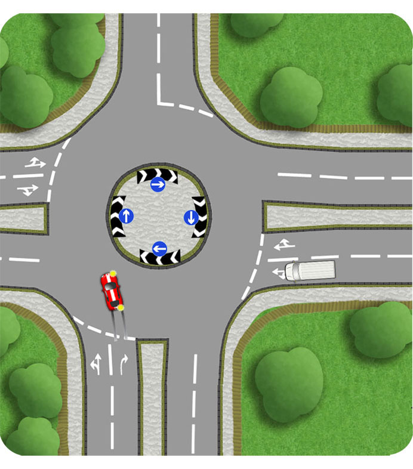
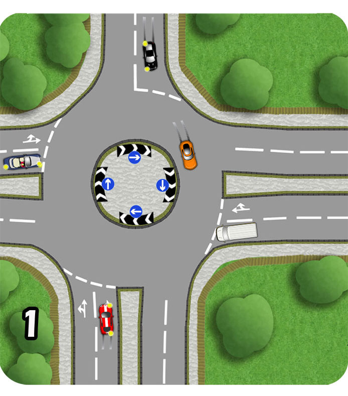
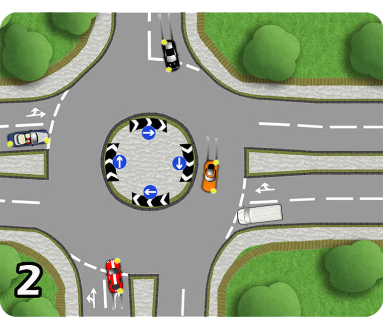

Approaching a roundabout, traffic from the right has priority and should not have to change speed or direction on your account, so smoothly stop at the line and select first gear if this would be the case.

However, do consider that the momentum you have on approach can often provide a great opportunity to slot onto the roundabout ahead of traffic from your right. Assess the relative speeds as you make this decision.
Aswell as observing the traffic to your immediate right, look further around the roundabout and consider any vehicles which they will be giving way to. This will often provide a window of opportunity for you to proceed and can be a crucial opportunity in busy traffic.

In picture 2, the orange car is signalling left. In this moment the opportunity is confirmed and progress made by the learner.
This kind of judgement can be made in split seconds and the opportunity may be small. The size of the roundabout and the speed of the traffic can affect your decision. You will become more confident with practice. As a learner, side with caution where not sure, but constantly observe this principle and learn to use it where appropriate.